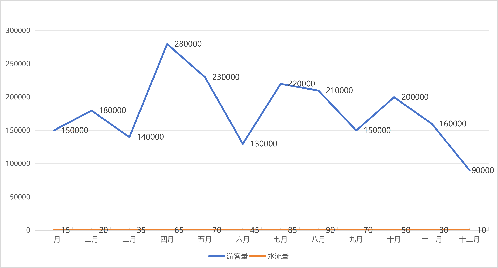
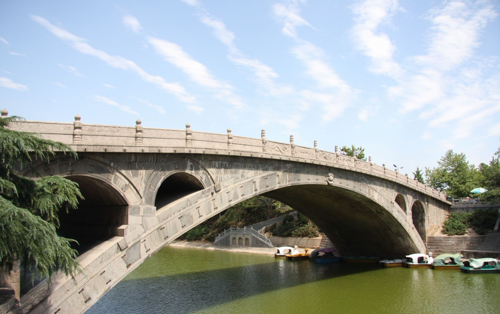
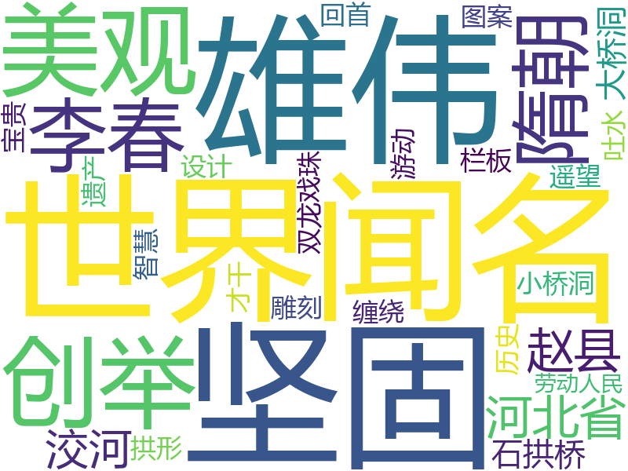

桥史
千年洨水汤汤，唯有赵州桥，静立成诗，落笔封神。
隋代李春，打破古法桎梏，缔造出世界现存最早、保存最完整的单孔敞肩石拱桥。28道拱券纵向并列，肩载四小拱，既卸桥身之重，又畅汛期之水。它有青灰石料的沉稳，历经千年的坚韧，是全国重点文保单位，更是一座无需言说的文明坐标。



本作品为中国大学生计算机设计大赛参赛作品，仅用于学习和展示。
部分历史资料、文字介绍参考自百度百科等公开平台，其中数据大屏通过积木报表制作，已注明来源，非商业使用